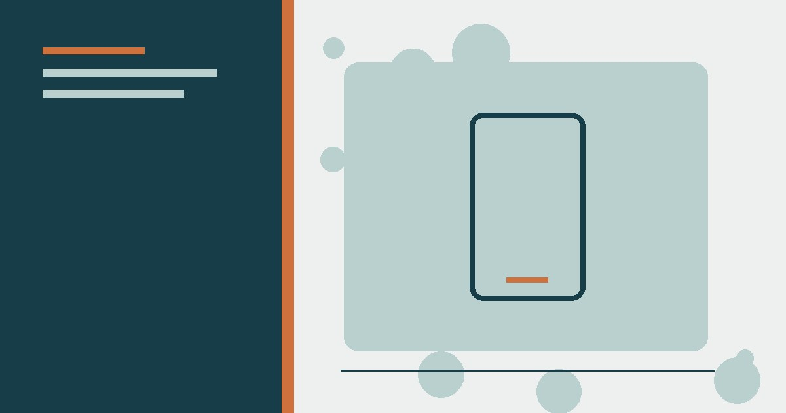

تكنولوجيا
كيف تختار هاتفًا ذكيًا يناسب ميزانيتك؟ دليل المبتدئين
دليل عملي لاختيار هاتف يناسب الميزانية حسب الاستخدام والتحديثات والبطارية والتخزين والكاميرا، مع قائمة فحص قبل الشراء.
8 حيل عملية لتوفير بيانات الجوال: معرفة التطبيقات الشرهة، إيقاف التحديثات التلقائية، تحميل الخرائط مسبقًا، وضغط الفيديو.

المسارات المذكورة قد تختلف حسب إصدار أندرويد وواجهة الشركة أو iOS. راجع صفحة استهلاك البيانات في جهازك وحدد التطبيقات الفعلية الأعلى استهلاكًا قبل تعطيل وظائف تحتاجها.
سجل استهلاك البداية، فعّل توفير البيانات للتطبيقات غير الضرورية، حمّل الخرائط والموسيقى عبر Wi‑Fi، ثم قارن الاستهلاك بعد سبعة أيام. لا تخفض جودة كل شيء إن لم يكن هو مصدر الاستهلاك.
لا شيء يزعج أكثر من رسالة «لقد استنفدت باقة البيانات» في منتصف الشهر. مع كثرة الفيديوهات والتطبيقات التي تعمل في الخلفية، تتبخر الباقات بسرعة. لكن الخبر الجيد: أغلب استهلاك البيانات مهدور على أشياء لا تحتاجها فعلًا، وهذه الحيل الثماني ستوفر لك نسبة كبيرة من باقتك.
قبل أي حل، اعرف أين تذهب بياناتك: افتح إعدادات الهاتف ← «استهلاك البيانات» أو «استخدام البيانات» ← سترى قائمة بالتطبيقات مرتبة حسب الاستهلاك. ستندهش غالبًا أن تطبيقات لا تستخدمها أصلًا تلتهم البيانات في الخلفية. هذه المعلومة هي أساس كل الحيل القادمة.
كثير من التطبيقات تحدّث نفسها وتزامن بياناتها في الخلفية دون علمك. في إعدادات البيانات، اختر «تقييد بيانات الخلفية» (Restrict background data) للتطبيقات التي لا تحتاج مزامنة مستمرة: تطبيقات التسوق، الأخبار، والألعاب. الفرق في الاستهلاك مذهل.
التحديثات التلقائية تستهلك مئات الميغابايت شهريًا. اضبط متجر التطبيقات على «التحديث عبر الواي فاي فقط» (Update apps over Wi-Fi only). التحديثات ليست عاجلة — قم بتحديثها يدويًا عند توفر شبكة واي فاي.
معظم التطبيقات الكبيرة لديها وضع توفير بيانات مدمج: يوتيوب (جودة أقل)، واتساب (عدم تحميل الوسائط تلقائيًا)، إنستغرام وفيسبوك (عدم تشغيل الفيديو تلقائيًا)، وخرائط جوجل (وضع توفير البيانات). فعّلها كلها — ستحصل على نفس التجربة تقريبًا بنصف الاستهلاك.
خرائط جوجل تسمح بتحميل الخرائط مسبقًا (Offline maps): افتح الخريطة، ابحث عن «الخرائط دون اتصال»، وحمّل منطقة مدينتك عبر الواي فاي. بعدها تستخدم الملاحة مجانًا تمامًا، وهذه الحيلة وحدها قد توفر لك مئات الميغابايت شهريًا إذا كنت تتنقل كثيرًا.
بعض المتصفحات تضغط الصفحات عبر خوادمها قبل إرسالها لهاتفك، فتخفض الاستهلاك حتى 60%: متصفح Opera (وضع توفير البيانات) أو Opera Mini هما الأشهر، ومتصفح Brave كذلك يمنع الإعلانات التي تلتهم البيانات (الإعلانات تشكل 20-50% من وزن الصفحات!).
الفيديو هو وحش البيانات الأول: فيديو بدقة عالية يستهلك 2 غيغابايت للساعة، بينما الجودة المتوسطة تستهلك 700 ميغابايت، والمنخفضة 300. اضبط الجودة على «تلقائي» أو «متوسط» عند استخدام بيانات الجوال، وحمّل الفيديوهات عبر الواي فاي للمشاهدة لاحقًا دون اتصال.
في إعدادات الهاتف، اضبط «تنبيه البيانات» (Data warning) عند 80% من باقتك، و«حد الاستخدام» (Data limit) عند 100%. التنبيه المبكر يجعلك تتحكم في استهلاكك بدل أن تفاجأ بانقطاع الباقة في منتصف الشهر.
بعد تطبيق هذه الحيل، قد تكتشف أنك لا تحتاج كل هذا الحجم من البيانات أصلًا، فتنزل لباقة أصغر وأوفر. كثير من الناس يدفعون مقابل باقات ضخمة لا يستخدمون حتى نصفها — تطبيق هذه الحيل ثم مراجعة باقتك خطوة ذكية توفر مبلغًا شهريًا ثابتًا.
توفير بيانات الجوال لا يعني الحرمان؛ إنه إيقاف الهدر: تطبيقات الخلفية، التحديثات التلقائية، التشغيل التلقائي للفيديو، والخرائط عبر الاتصال. ابدأ بأول حيلتين اليوم (اكتشاف الشرهين + تقييد الخلفية) وسترى الفرق في نهاية الشهر — وباقتك ستشكرك.
فعّل وضع توفير البيانات، واسمح بالتحديثات عبر Wi-Fi فقط، وانزل الخرائط للاستخدام دون اتصال. بثّ الفيديو بدقة أقل يوفّر الكثير. مراقبة استهلاك كل تطبيق تكشف المتعطّش منها.
رُوجعت المعلومات العامة في هذا المقال بالاستناد إلى المصادر التالية. الروابط الخارجية قد تُحدّث محتواها بمرور الوقت.
دليل عملي لاختيار هاتف يناسب الميزانية حسب الاستخدام والتحديثات والبطارية والتخزين والكاميرا، مع قائمة فحص قبل الشراء.

دليل حماية الحسابات من الاختراق: كلمات مرور فريدة، مدير كلمات المرور، المصادقة متعددة العوامل، مفاتيح المرور وخطة استرداد الحساب.

شرح مبسط ودقيق للذكاء الاصطناعي: التدريب والاستدلال والذكاء التوليدي والأخطاء والخصوصية وكيفية استخدام الأدوات بوعي.